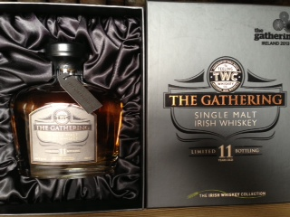

Page 37 of 49
Re: What's your latest whiskey purchase?

Posted:
Wed May 29, 2013 12:38 amby Joel1802
JJ&S 7 y.o. PPS
Re: What's your latest whiskey purchase?
Posted:
Wed May 29, 2013 8:51 amby TheWhiskeyBro
Nice find Joel, appreciate your tasting notes as always, if you have time post a pic, is it from 1930s, 40s, 50s or 60s.
Re: What's your latest whiskey purchase?
Posted:
Wed May 29, 2013 10:55 amby JohnM
Got a few of the new Ardbeg Ardbogs, as well as a couple of Karuizawas and Glenlivet Alphas... And the Arran 16.
Re: What's your latest whiskey purchase?
Posted:
Thu May 30, 2013 5:39 amby Joel1802
TheWhiskeyBro wrote:Nice find Joel, appreciate your tasting notes as always, if you have time post a pic, is it from 1930s, 40s, 50s or 60s.
'60s for export. Nothing amazing, but a good price.
Re: What's your latest whiskey purchase?
Posted:
Thu May 30, 2013 6:19 pmby Good Whiskey Hunting
I picked up an interesting plinth on holidays in France. I was in a little wine shop in Rouen and got a plinth with the new Bunnahabhain 12, a Hine VSOP and a Angostura Caribbean Rum. I'm looking forward to trying them with the complementary glasses he gave me. All for €134.
Tres Bon as Del would say

Re: What's your latest whiskey purchase?
Posted:
Fri May 31, 2013 9:53 amby IrishWhiskeyChaser
Good Whiskey Hunting wrote:I picked up an interesting plinth on holidays in France. I was in a little wine shop in Rouen and got a plinth with the new Bunnahabhain 12, a Hine VSOP and a Angostura Caribbean Rum. I'm looking forward to trying them with the complementary glasses he gave me. All for €134.
Tres Bon as Del would say
Mon dieu!
tres bien ensemble
Re: What's your latest whiskey purchase?
Posted:
Fri Jun 07, 2013 3:01 amby JRB
Been on a bit of a buying spree lately, at least by my terms. A few highlights from the last month or so:
Green Spot
Writers Tears
Midleton Barry Crockett
Tyrconnel Madeira
PJL
Redbreast 12 CS and 15
Enjoying them all, trying not to exhaust the new supply too quickly!
Re: What's your latest whiskey purchase?
Posted:
Fri Jun 07, 2013 8:58 amby Luke Gough
JRB wrote:Been on a bit of a buying spree lately, at least by my terms. A few highlights from the last month or so:
Green Spot
Writers Tears
Midleton Barry Crockett
Tyrconnel Madeira
PJL
Redbreast 12 CS and 15
Enjoying them all, trying not to exhaust the new supply too quickly!
Buy as much Powers Johns Lane 12 as you can!
Rumour

has it it's going to be phased out in favour of a non-age-statement SPS bottled at 46%abv/ncf

Re: What's your latest whiskey purchase?
Posted:
Tue Jun 11, 2013 1:07 amby Good Whiskey Hunting
I got a bottle of Scapa 16 and Aberlour A'bunadh in The Celtic Whiskey Shop earlier today. I've been wanting both for a while.
I've never tried either but am a fan of Aberlour.
Re: What's your latest whiskey purchase?
Posted:
Tue Jun 11, 2013 5:33 amby Joel1802
Both are very good, I think you've just given me an new item for my shopping list!
Re: What's your latest whiskey purchase?
Posted:
Tue Jun 11, 2013 10:43 amby IrishWhiskeyChaser
The A'bunadh might surprise you (in a good way) as it is much bigger in every way that their regular 10yo. Big bold and full of fruit.
Have not had a bottle in a long time must remedy that though. I remember when it first came out and have had a bottle or taste of releases 1 through 6 and then a few others like 8 and 15 but nothing since so not sure how long that is

Re: What's your latest whiskey purchase?
Posted:
Tue Jun 11, 2013 2:13 pmby Joel1802
A'bunadh is an old friend, but it has been too long. Time to fix that.
Re: What's your latest whiskey purchase?
Posted:
Fri Jun 14, 2013 6:49 pmby Alicja
on Airport: Ardbeg 10 YO, Writers Tears Pot Still, and in british Asda Aberlour 10YO for 18 pounds. And the best: I won a photo competition on
www.singlepotstill.com and I got a bottle of Barry Crockett Legacy - I am very happy

Re: What's your latest whiskey purchase?
Posted:
Fri Jun 14, 2013 8:10 pmby varizoltan
Alicja wrote:on Airport: Ardbeg 10 YO, Writers Tears Pot Still, and in british Asda Aberlour 10YO for 18 pounds. And the best: I won a photo competition on
http://www.singlepotstill.com and I got a bottle of Barry Crockett Legacy - I am very happy
welcome to the club, i won the same in april
Re: What's your latest whiskey purchase?
Posted:
Fri Jun 14, 2013 9:56 pmby IrishWhiskeyChaser
GLS arrived at the door with my Laphroaig Cairdeas Port Wood.
Cant wait to try it.

Re: What's your latest whiskey purchase?
Posted:
Sat Jun 15, 2013 8:33 amby Luke Gough
IrishWhiskeyChaser wrote:GLS arrived at the door with my Laphroaig Cairdeas Port Wood.
Cant wait to try it.
I'm green with envy - I mean it!

Re: What's your latest whiskey purchase?
Posted:
Sun Jul 07, 2013 10:32 pmby Good Whiskey Hunting
4 Ardbegs and one was a Ardbeg Corryvreckan for €200.
I got a wisdom tooth out last week and I've only been able to drink in the last few days. I had a bottle of Ardbeg and it was nearly empty. I seem to have a taste for them lately, it may be the lack of wisdom but at those prices I think I can't go wrong.
Re: What's your latest whiskey purchase?
Posted:
Tue Jul 09, 2013 6:04 pmby DublinGus
Kilbeggan 22 euros
Jameson Great Urban Escape 27euros
Powers 12 year old New design 40euros
all Tesco
Re: What's your latest whiskey purchase?
Posted:
Wed Jul 10, 2013 12:15 pmby varizoltan
DublinGus wrote:Kilbeggan 22 euros
Jameson Great Urban Escape 27euros
Powers 12 year old New design 40euros
all Tesco
Powers 12 new design???
is this something new ?
Re: What's your latest whiskey purchase?
Posted:
Wed Jul 10, 2013 7:00 pmby DublinGus
varizoltan wrote:DublinGus wrote:Kilbeggan 22 euros
Jameson Great Urban Escape 27euros
Powers 12 year old New design 40euros
all Tesco
Powers 12 new design???
is this something new ?
It would take a keen eye to spot the difference on the packaging, but the label on the bottle is a different design. The bottle has been on the shelves for the last 6-8 months.
Re: What's your latest whiskey purchase?
Posted:
Tue Jul 30, 2013 12:15 pmby John
Just picked up a bottle of a Tullamore Dew Phoenix in the Irish Whiskey Collection at Dublin Airport. Not a big Tullamore fan, but it is cask strength and they do have an offer on a number of good whiskeys where they are offering the duty free prices on them.
Re: What's your latest whiskey purchase?
Posted:
Tue Jul 30, 2013 1:12 pmby matt
John wrote:Just picked up a bottle of a Tullamore Dew Phoenix in the Irish Whiskey Collection at Dublin Airport. Not a big Tullamore fan, but it is cask strength and they do have an offer on a number of good whiskeys where they are offering the duty free prices on them.
Hi John,
Wondering did you see any Midleton Very Rare 2013 on the Airport?
I have some friends coming over from Dublin on Wednesday and they nid a advice what to Pick-up for me.
Cheers Matt
Re: What's your latest whiskey purchase?
Posted:
Tue Jul 30, 2013 4:35 pmby John
I did see plenty of Midleton Matt, unfortunately I couldn't say for sure what year they were. They have the offer I spoke about above (duty-free prices even if you are travelling intra-EU) on a number of nice bottles so definitely worth a look.
Re: What's your latest whiskey purchase?
Posted:
Thu Aug 01, 2013 5:01 pmby Distiller
Just Bought a bottle of TWC's The Gathering 11yr Single Malt at T2.
Notes of interest:
-11yr old Single Malt for Euro 69.95
-1,000 individually numbered bottles
-46% abv non-chill natural color
-From 4 casks (2 X AB 2001, 1 X HH Crystal Malt 91, dash from one AB 91 just to tie it all together)
-very nice package
- 
- Gathering.JPG (42.64 KiB) Viewed 2867 times
Re: What's your latest whiskey purchase?
Posted:
Fri Aug 02, 2013 1:02 pmby shanel23
Picked up a bottle on the new Teeling Gathering 11yr old and a bottle of the regular Teeling - really love this one